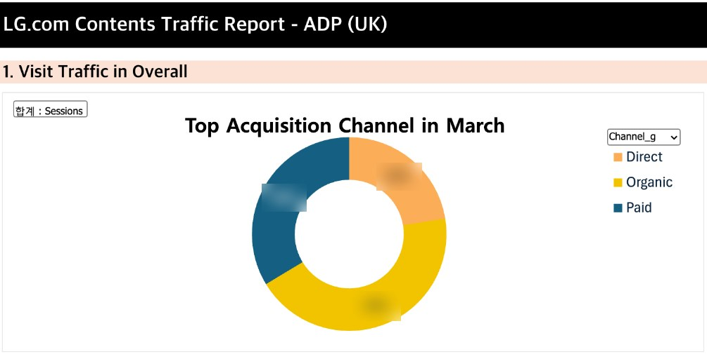

Automating GA/SEO reporting for LG's business units, from 3 days to under 6 hours
How a reporting chore became LG's global GA/SEO reporting format and won Concentrix's AI Enhancement Contest.

Lead time for one monthly reporting cycle
Adopted as LG's global GA/SEO reporting format across 4 business units.
- Role
- GA/SEO analyst
- Scope
- 4 product-based business units
- Coverage
- LG websites in ~70 countries
- Award
- 1st Place, 2025 AI Enhancement Contest
 LG Electronics makes home appliances, TVs and IT products sold worldwide, with KRW 89 trillion (about USD 60B+) in 2025 revenue. Concentrix, a global customer-experience company with about 455,000 employees, runs LG’s global website management project; LG is one of its largest B2B clients.
LG Electronics makes home appliances, TVs and IT products sold worldwide, with KRW 89 trillion (about USD 60B+) in 2025 revenue. Concentrix, a global customer-experience company with about 455,000 employees, runs LG’s global website management project; LG is one of its largest B2B clients.
The situation and the challenge
Back in 2024, every LG business unit received a monthly traffic and SEO report: visits, channel trends, top landing pages, impressions, clicks and keywords. The summary for each unit and country was written by hand, which took about three days per cycle.
Who was involved
What I did
- Sep 2024Took on monthly GA/SEO reports for LG's business units
- AutomationAI LLMs write the per-unit, per-country summaries
- Jan 2025Handed over as a reusable template
- 20251st Place, Concentrix AI Enhancement Contest
- Automated the report using AI LLMs so the per-unit, per-country summaries build themselves from the source data.
- Turned it into a reusable template and handed it over to the next analyst in January 2025.
- Extended the tool so it could automate reporting for every Concentrix client, at a time when generative AI was only starting to be used in day-to-day work.
Key decisions
- Automate the summary layer first.That was where the three days went. The data itself was already available; assembling it was the bottleneck.
- Build it as a template others could run.A report only I could produce would have left with me. A template meant the format could become the standard.
Results
- Adopted as LG's global GA/SEO reporting format.
- 1st Place at the 2025 Concentrix AI Enhancement Contest, among more than 30 participants.
What I took from it
The first thing I automate is whatever someone rebuilds by hand every month. It is rarely the hardest work, but it is the work nobody has time to question.